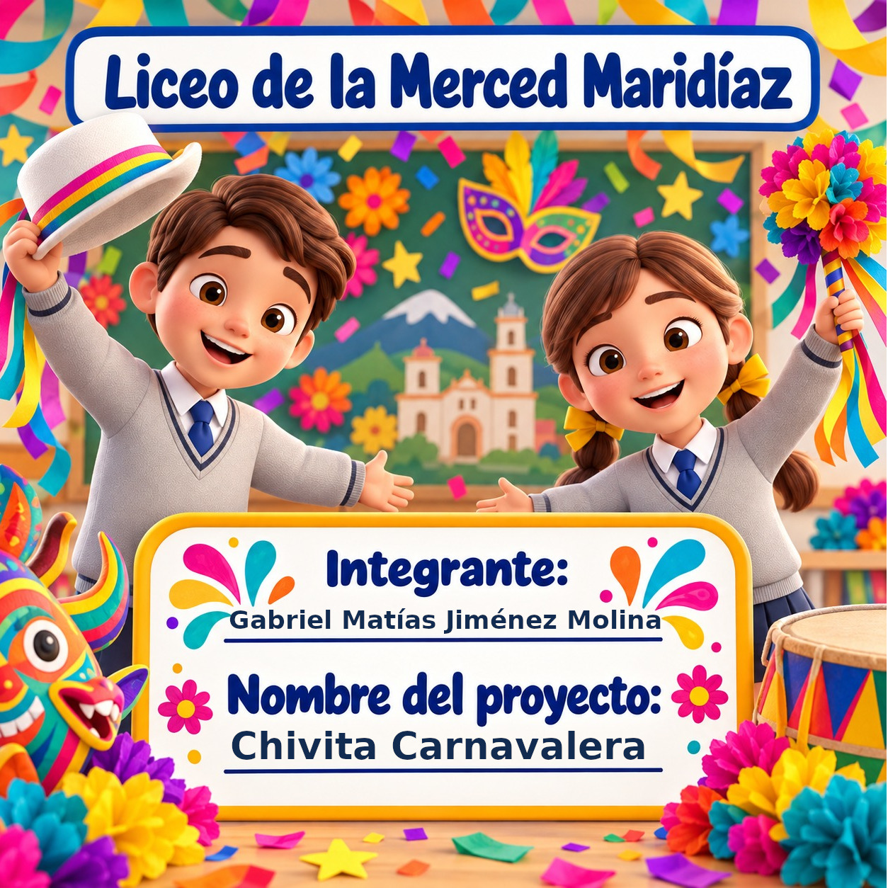

Exposición interactiva sobre la magia, los artesanos, las carrozas y la música de San Juan de Pasto.
Has respondido correctamente 4 de 4 preguntas.
Expositor: Gabriel Matías Jiménez Molina • Proyecto: Chivita Carnavalera
¡Que vivan los Negros!